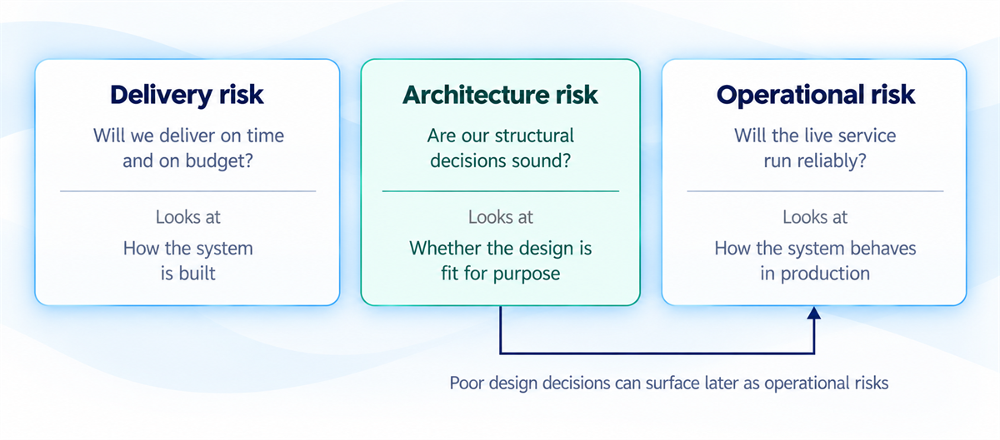
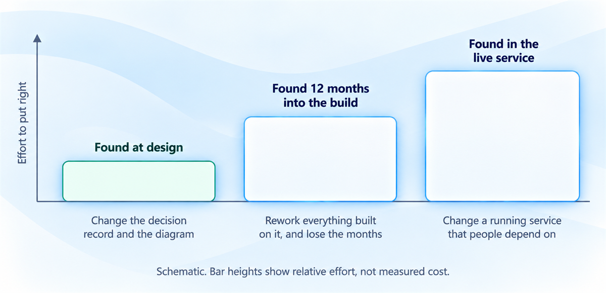
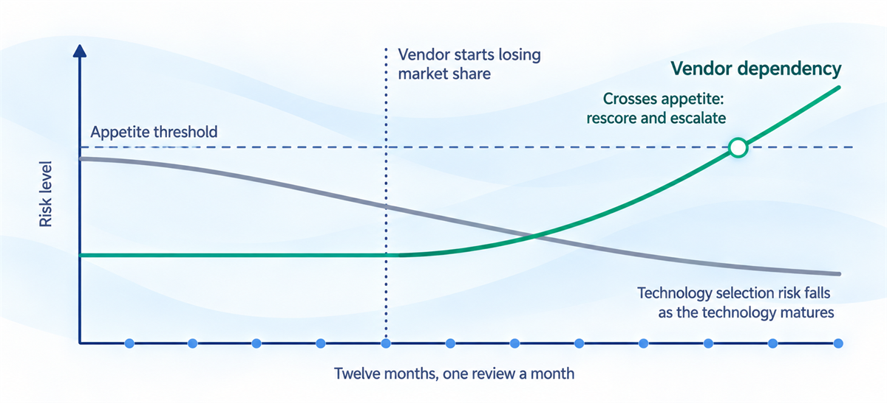

Architecture risk management
Find structural risk while it is cheap to fix, and put it to someone who can accept it.
You'll come away with:
- How architecture risk differs from delivery and operational risk, and why it gets dearer to fix the later you find it
- How to apply the Orange Book to assessing and treating architecture risk
- Seven risks worth looking for on any government programme, and what to do about each at design time
- How to write a risk a programme board can act on, and when to escalate
Every architecture decision carries risk, including the decision to leave things as they are. The job is to find that risk while it is still cheap to deal with, and to put it in front of someone with the authority to accept it.
Every design decision is a risk decision
Choose a new technology and you take on adoption risk; choose a mature one and you take on obsolescence risk. Integrate with a third party and you depend on someone you do not control. Build it yourself and you maintain it for as long as it runs. No option on the table is risk free, and that includes changing nothing. The useful question is whether the risk has been sized honestly, and whether the person carrying it agreed to.
The Orange Book, HM Treasury's guidance on managing risk, applies to government departments and their arm's length bodies, and its main principles are mandatory on a comply-or-explain basis. It says risk management must be an integral part of informed decision making, and it lists technology among its example categories of risk. Weighing the risk of an option is part of choosing it. Doing it afterwards to fill a column in a register is paperwork.
A risk nobody has written down still has an owner. It is whoever gets the call when it goes wrong.
Architecture risk is a category of its own
Programme risk registers lean on two familiar questions. Delivery risk asks whether the work will land on time and on budget. Operational risk asks whether the live service will run reliably. Architecture risk asks whether the structural decisions are sound, and whether the design will still meet its requirements once the changes already on the horizon arrive. Answering that takes technical knowledge, so a register kept without an architect in the room can miss it entirely.

More time and money can rescue a late delivery but cannot undo a structural decision that was wrong. A wrong technology choice found 12 months into development can cost those 12 months plus the rework, and design flaws left in place can come back later as operational risks, in production, with users watching.

"We'll run a risk review once the design is signed off."
By then the cheap options have gone. The Orange Book puts it plainly: at its most effective, risk management is as much about evaluating the uncertainties within options as managing impacts once choices are made. Give every option in an options paper four answers: what could go wrong, how likely it is, how bad it would be and what would reduce it.
The Orange Book, applied to architecture
Start with appetite. The Orange Book expects the board to decide the nature and extent of the principal risks the organisation is willing to take, and it is blunt that public sector organisations cannot be risk averse and be successful. A service paying benefits to people who rely on the money is likely to tolerate far less technology risk than a research prototype. Design to the appetite the organisation has set. Bringing your own, cautious or bold, quietly overrules a decision that was never yours.
Then find the risks. Threat modelling shows what an attacker could do; failure mode analysis shows what happens when each component fails. Dependency mapping covers what you rely on but do not control, and the Orange Book expects risks to be identified whether or not their sources are under your direct control. Assumption testing finds what the design takes for granted, and horizon scanning looks for market changes that could reach you before the service retires.
Score each risk on how likely it is and how bad it would be, rating the impact against the highest credible worst case, as the Orange Book advises, however unwelcome that conversation is. Plot the results on a likelihood and impact grid. High on both needs action now; low on both can be accepted and watched. The State of digital government review describes how the former Central Digital and Data Office (CDDO) defined a red-rated legacy system in the same terms: high likelihood and high impact.
![Two three by three grids of likelihood against impact. On the left, an illustrative low appetite, for example a service that pays benefits, where only the three lowest cells sit inside appetite. On the right, an illustrative higher appetite, for example a research prototype, where only the three highest cells sit outside it. The same risk, plotted at medium likelihood and medium impact, falls outside appetite on the left and must be treated, and inside appetite on the right, where it can be accepted on the record.](images/lesson24-image3.png)
Each risk that matters then needs a response. Mitigate it by reducing the likelihood or the impact. Transfer it to someone better placed to manage it, for example through a contract. Avoid it by changing the design so the risk no longer exists. Accept it, on the record, when it sits inside appetite, or when the board agrees that mitigation would cost more than the risk is likely to. The Orange Book's own list of options adds one more: taking on more risk, deliberately, to pursue an opportunity.
Owners, and risks that move
Every risk needs a named owner. The analysis of architecture risks belongs with the architect or the architecture team, because judging them takes technical knowledge. Owning the analysis and owning the risk are different things, though. When acceptance means spending money or carrying exposure your role cannot sign off, the decision moves up. Secure by Design makes this explicit for cyber security: its first principle requires risk owners who are senior stakeholders with the experience, knowledge and authority to lead on security activities.
Risks also move, sometimes for reasons nobody on the programme controls, and the Orange Book wants monitoring to show whether and how the risk profile is changing. A vendor dependency grows when the vendor starts losing market share; a technology selection risk shrinks as the technology matures. Review architecture risks monthly and rescore them on what has changed, instead of rolling last month's numbers forward because nobody objected.

If no score on a register has changed for months, check whether anyone is reading it.
Seven risks that keep coming back
Seven architecture risks are worth looking for by name on any government programme. Each has known drivers, and each is easier to deal with in the design than in production.
![A typical government service: citizens and caseworkers reach a web front end, application service and shared database inside a dashed trust boundary. The service connects to partner systems outside your control, runs on a vendor platform with runtimes and licensed products, and is maintained by a delivery team. Numbered markers show where seven risks sit: 1 vendor dependency on the vendor platform, 2 technology obsolescence on the runtimes and products, 3 integration fragility on the link to partner systems, 4 scalability ceiling on the shared database, 5 security architecture weakness on the trust boundary, 6 architectural drift between the designed and the built architecture, and 7 skills concentration in the delivery team.](images/lesson24-image5.png)
Vendor dependency is the risk that a supplier becomes unavailable, unaffordable or uncooperative and the architecture stops you leaving. Proprietary technology and single-supplier contracts with weak exit terms make it more likely. It has already happened to government: the State of digital government review records that government was exposed to VMware's price rises after the Broadcom acquisition, because it had no cross-government commercial agreement.
Use open standards at integration boundaries, keep data exportable in open formats and keep enough knowledge in house to run without the vendor. Point 11 of the Technology Code of Practice (Define your purchasing strategy) says contracts must be explicit about who owns government data and intellectual property, and should, where economic, include a break clause at no more than two years with minimal exit costs. The Sourcing Playbook lists planning early for the end of the contract as a principle for all sourcing projects. Score lock-in during procurement, while you can still choose.
Technology obsolescence is the risk that something you chose reaches end of life before the service does. Over a long enough timeframe that is certain; the question is whether it lands inside your planning horizon. The same review estimated legacy at 28% of systems in central government departments in 2024. Choose technologies with a track record and an active community, build refresh into the roadmap, prefer managed services where the provider handles upgrades, and watch for end-of-support notices.
Integration fragility is the risk that a connection fails under load or when a partner changes their system. Synchronous point-to-point calls raise it, and so do undocumented interfaces and anything that depends on a system outside your control. Use circuit breakers, let the service degrade gracefully when a partner goes quiet, go asynchronous where real time is not needed, and test integration contracts explicitly. Monitor integration health so you hear about a failure before your users do.
A scalability ceiling means the architecture cannot take the growth you are projecting. Look first at anything that runs as a single instance or processes synchronously, then at shared databases and connection pools. Build stateless services that scale horizontally, separate reads from writes, cache, queue work that needs no immediate answer, and load test at projected peak during beta.
A security architecture weakness is a structural flaw only a redesign can fix, made more likely by complex trust boundaries and inconsistent authentication. Controls bolted on late make it worse. Secure by Design is mandatory for central government departments and arm's length bodies, so bring the departmental security team in at the start. Threat model during design, layer controls so one failure does not expose everything (Secure by Design calls this defend in depth), and commission independent penetration testing before go live.
Architectural drift is the built system wandering away from the designed one, as shortcuts pile up, requirements change and the reasoning behind the design leaves with the people who held it. It speeds up without governance or decision records, and every time the team turns over. Keep design authority reviews going, record decisions as architecture decision records (ADRs), and compare the built architecture with the documented one every quarter.
Skills concentration is the risk that critical knowledge sits in too few heads. Niche technology and an undocumented design make it worse, especially in a small team, and the State of digital government review found that use of temporary staff hinders retention of institutional knowledge. Keep documentation alive, cross train, prefer mainstream technology with a deep talent pool, and make sure at least three people understand every critical component. If one person's holiday moves a release date, you have already found this risk.
Putting risk in front of the people who decide
A programme board cannot act on the words "vendor lock-in". The Orange Book advises stating a risk as cause, event and consequence, and taking care not to state a consequence as if it were the risk. Lock-in is the cause; the board needs the rest. If the supplier raises its prices, which it can because there is no alternative, the service costs, say, £400,000 a year more for nothing new, and leaving would cost around £2 million and take 18 months at the higher price.
Then give it a likelihood and a date. Take a hypothetical application server that loses support in March 2028, after which there are no security patches for a system holding citizen data. A board can plan against a date; it cannot plan against "ageing infrastructure". Say how likely you think exploitation is and why, without inventing precision you do not have.
Tie it to something the board already owns. A scalability ceiling becomes urgent when it threatens the minister's priority in the week demand peaks, and a fix costing, say, £120,000 reads very differently next to the cost of an emergency response that week.
Record architecture risks in the programme risk register, in the same format as the delivery, financial and political risks the board already reviews. Each entry needs:
- a description a board can read without a glossary, written as cause, event and consequence
- likelihood and impact, on the programme's own scales
- proximity, meaning when it could happen
- a named owner
- mitigation actions, each with a date
![Three boxes left to right. The architecture team, highlighted, identifies and assesses the risk and owns the analysis. An arrow labelled record leads to the programme risk register, where architecture risks sit in the same format as delivery, financial and political risks. An arrow labelled escalate leads to the programme board, which decides on risks beyond appetite or that need money. A dashed box shows the agreed triggers: the risk exceeds the programme's appetite, or it needs an investment decision. A dashed box, its connector crossed out, marks where architecture risks should not live: a separate technical document or backlog.](images/lesson24-image6.png)
Escalate anything that exceeds the programme's risk appetite or needs an investment decision. The Orange Book asks boards to have clear processes, with agreed triggers, for getting serious issues in front of them faster when needed, so agree yours before the first one fires. A risk that could take down a service used by millions belongs on the programme board's agenda. The bottom of a technical backlog is where risks go to be forgotten.
A board can only accept a risk it has been shown. Anything it has not been shown, it is carrying blind.
This guide is one practitioner's account of architecture risk management for UK government services, not official guidance. The categories, the seven recurring risks and the examples are teaching aids; the authoritative requirements are in the HM Treasury, Secure by Design and government sources below.
Last reviewed October 2026 against the government sources below. Policy and guidance change, so check the source before relying on it.